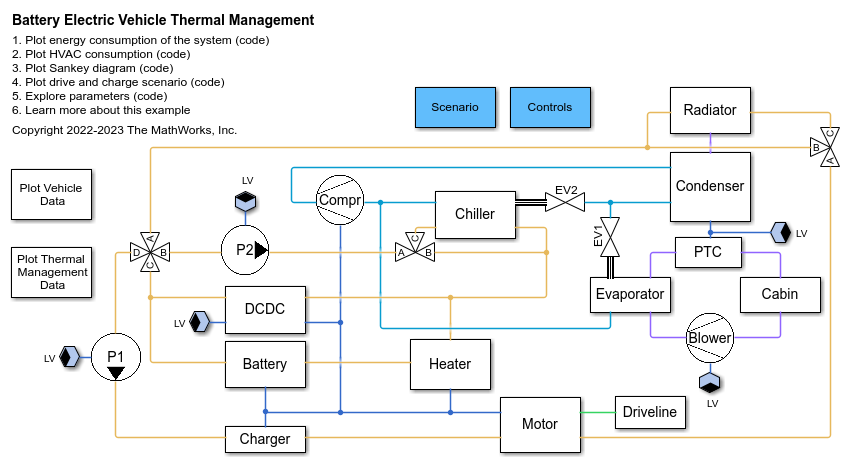
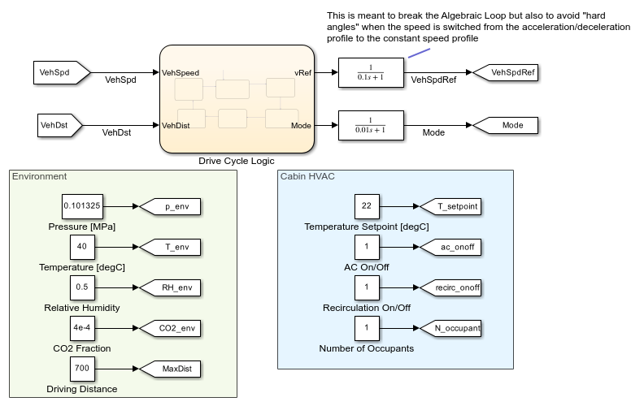
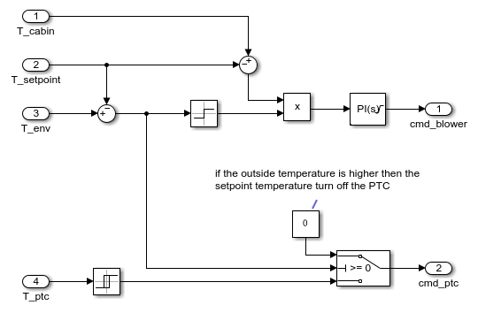
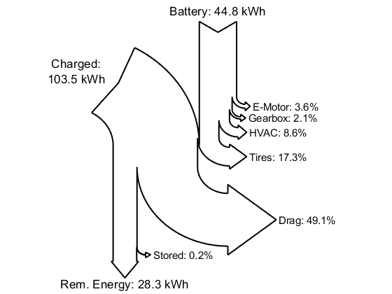
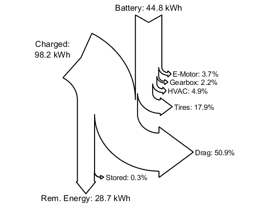

BEV Thermal Management System, Sensitivity to Cabin Setpoint
This example models a Battery Electric Vehicle (BEV) model with a thermal management system. It is used to measure the sensitivity of the design to the setpoint of the cabin temperature.
Contents
Model
Cabin Air Control
The setpoint temperature for the cabin affects when the blower and the PTC should be turned on. The setpoint temperature is set within the model and passed to the control logic to turn these components on or off.
Here is where the cabin temperature setpoint is specified. It is passed via a Simulink signal to the control subsystem
Here is where the blower and PTC control logic is modeled. The setpoint is an input to this logic.
Sensitivity Analysis: Passenger Count
The thermal management system is tested in a drive and charge scenario. The vehicle must be driven a specific distance. The driver accelerates to cruising speed and holds it there until the battery SOC reaches a lower threshold. The driver then decelerates and waits as the battery is charged using a CCCV profile for 30 minutes. This cycle is repeated until the vehicle reaches the specified distance.
The sensitivity of the design to the cabin setpoint temperature is tested by performing a parameter sweep. The diagrams below show the increase in energy loss, and they are generated by the code sensitivityCabinSetpoint. The plot below shows the impact of the number of passengers on the vehicle losses
The mean range reduction per passenger is 1.7 km The mean consumption per passenger is -0.1 kWh The additional recharged energy per passenger is -1.1 kWh The additional cost energy per passenger is -0.7 euro
Plot of results for lowest temperature setpoint
Cabin Temperature Setpoint: 22.00
Plot of results for highest temperature setpoint
Cabin Temperature Setpoint: 32.00